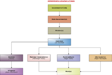

Vice-President of India
| Vice President of the Republic of India (भारत के उपराष्ट्रपति) |
|
|---|---|
Emblem of India |
|
| Residence | Vice President's House |
| Nominator | UPA, Left[1] |
| Term length | Five years, renewable |
| Inaugural holder | Dr. S Radhakrishnan since May 13, 1952 to May 12, 1962 |
| Final holder | Bhairon Singh Shekhawat |
| Salary | |
| Website | Vice President of India |
{kind=link}
 This article is part of the series: |
|
|
| 
Other countries · Politics Portal |
{kind=link}
The Vice-President of India (Hindi: भारत के उपराष्ट्रपति) is the second-highest ranking government official in the executive branch of the Government of India, after the President. The Vice-President also has the legislative function of acting as the Chairman of the Rajya Sabha.
The current Vice-President of India is Hamid Ansari, who was elected on 10 August 2007.
Article 63 of the Constitution of India provides for a Vice-President: "There shall be a Vice-President of India". While the Indian Vice-President could be elected for any number of terms, the Constitution requires that the Vice-President must be a citizen of India.
[edit] Powers and duties
The Vice-President acts as President in the event of death, resignation, or removal of the President until a new President is chosen by the electoral college for maximum 6 months. During this period, the Vice President shall not perform the duties of the office of the Chairman of Rajya Sabha.
He is also the ex-officio chairman of Rajya Sabha. All bills, resolution, motion can be taken in Rajya Sabha after his consent. However since he is not a member of Rajya Sabha, he has no right to vote.
The Vice President is the second highest dignitary of India, next to the President of India.
[edit] Qualifications
- Citizen of India.
- More than 35 yrs of age.
- Possess the qualification for membership of Rajya Sabha.
- Not hold any office of profit under union, state or local authority.
[edit] Election
The vice-president is elected by electoral college in accordance with the system of proportional representation by means of single transferable vote and the vote being secret. Nominated members can also participate in his election.
[edit] Term
The Vice-President holds office for five years. He/she can be re-elected any number of times.
However the term will be cut short if the Vice-President resigns, dies, or is impeached.
[edit] Salary and pension
The present salary is Rs.1,25,000 per month only under capacity of ex-officio chairman of Rajya Sabha. However when the president post becomes vacant, he is entitled for the salary and privileges of the President of India. But during this period, he shall not be entitled to receive the salary of the Chairman of Rajya Sabha.
The pension is 50% of the salary.
Emoluments: The Constitution has not fixed any emoluments for the vice president in that capacity. He draws his regular salary in his capacity as the ex-officio Chairman of the Rajya Sabha.
[edit] Removal
The Constitution of India provides the mechanism for the removal of the Vice-President (Article 67(b)) by a resolution passed by an absolute majority in Rajya Sabha and agreed to by a simple majority of Lok Sabha.
[edit] See also
[edit] References
- ^ "UPA-Left names Ansari for Vice-President". PTI. The Hindu. 21 July 2007. http://www.hindu.com/2007/07/21/stories/2007072150080100.htm. Retrieved 28 August 2011.
[edit] External links
- Official website of the Vice President of India. Website accessed on 10 October 2008.
|
|||
|
||